An agent skill for interactive explainers
Explain how anything works, with figures people can touch.
Ask your agent about a jaw joint, a tide, or a hash table. Safis writes a long-form page that builds the idea step by step, with live figures the reader drags, turns, cuts open, and hears. One HTML file. No server.
npx skills add broisnees/safis -gWorks in Claude Code, Codex, OpenCode, Cursor, and any agent that reads Agent Skills.
Explainers
Pages the skill wrote.
Every page here was built with Safis, from a single prompt and the checks above. Open one and play with the figures.
New
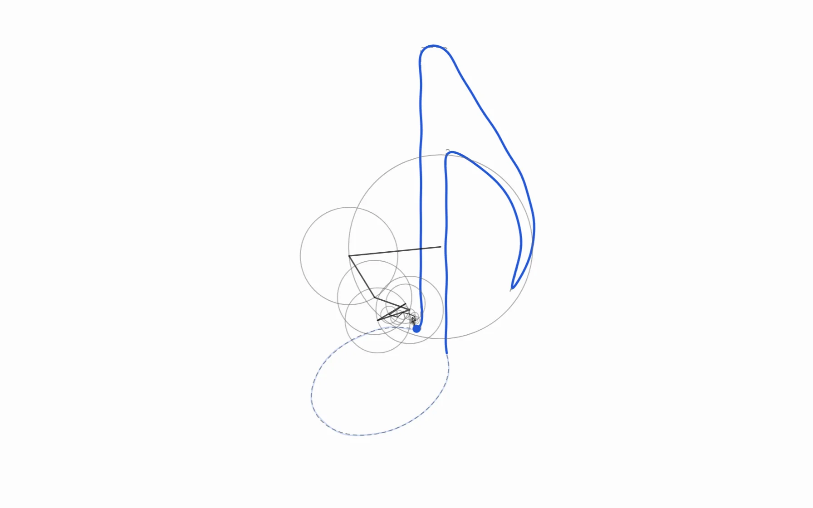
NewHow Spinning Circles Draw AnythingHow any repeating wave, and even any closed drawing, can be built from circles turning at whole-number speeds, and how to find out which circles a shape needs.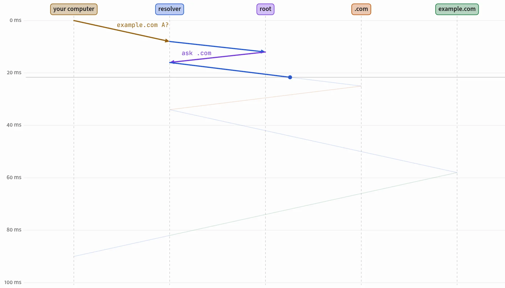
NewHow DNS Turns a Name into an AddressWhat happens in the few milliseconds between typing a name like example.com and your computer knowing which address to connect to, and why the answer is usually already waiting in a cache.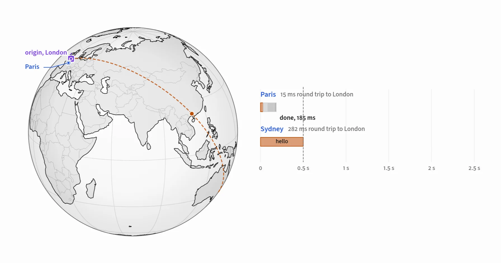
NewHow a CDN Makes a Faraway Site FastWhy a page from the other side of the world loads slowly, and how a content delivery network hides the distance with copies, short round trips, and connections kept warm.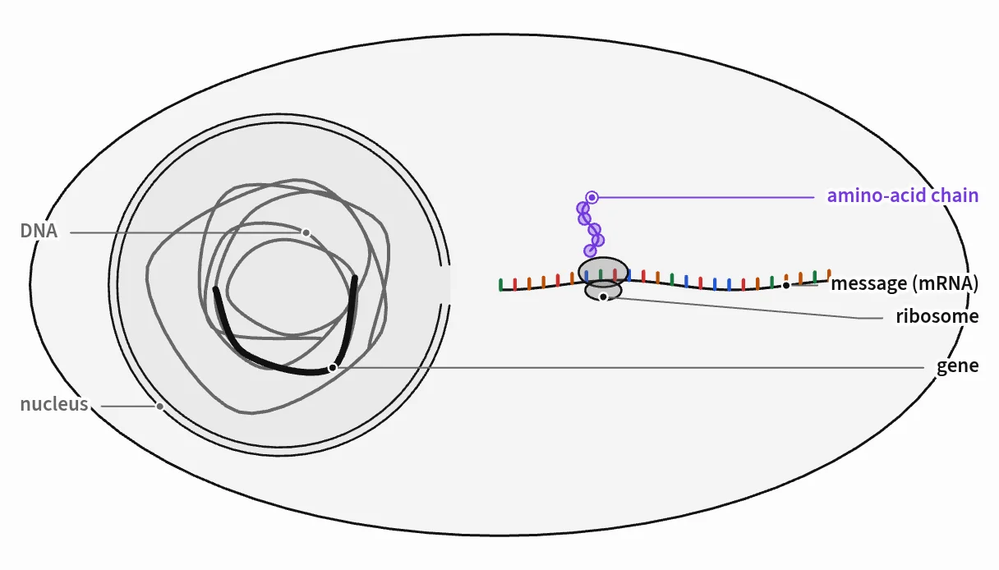
NewHow a Cell Builds a ProteinHow a cell copies one gene out of its DNA into a message, reads that message three letters at a time, and strings amino acids into the protein the gene describes, and what a single changed letter can do.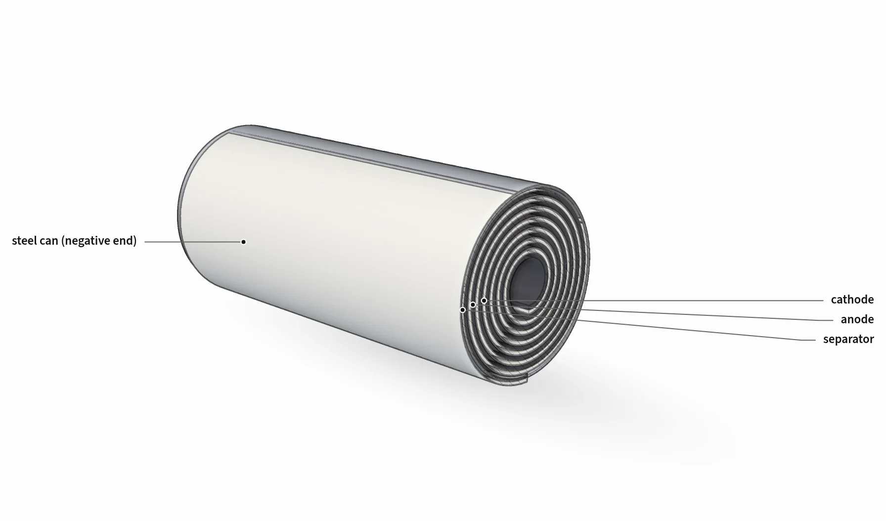
NewThe Lithium-Ion BatteryHow a lithium-ion cell stores energy by moving lithium out of graphite and into a metal oxide, and why every charge wears it down a little.Body
Biology
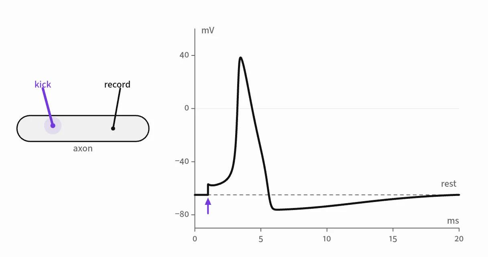
How a Neuron FiresHow a nerve cell turns a small nudge into an all-or-nothing electrical spike, and how that spike races down its axon.Chemistry
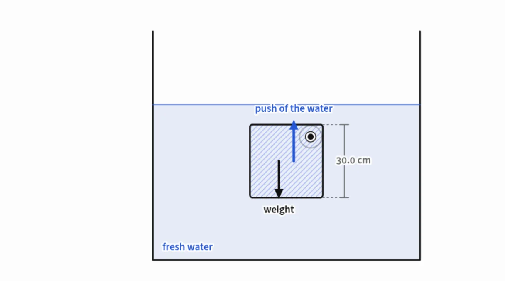
Why Ice FloatsHow the shape of one small molecule makes frozen water lighter than liquid water, and why lakes freeze from the top down.Physics
Machines
Earth & Space
Computing
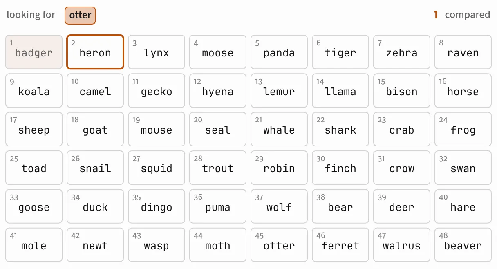
How a Hash Table Finds ThingsWhy looking up one word among a million can take two steps instead of half a million, what makes a good hash, and how real tables stay fast against bad luck, slow memory, and attackers.How DNS Turns a Name into an AddressWhat happens in the few milliseconds between typing a name like example.com and your computer knowing which address to connect to, and why the answer is usually already waiting in a cache.AI
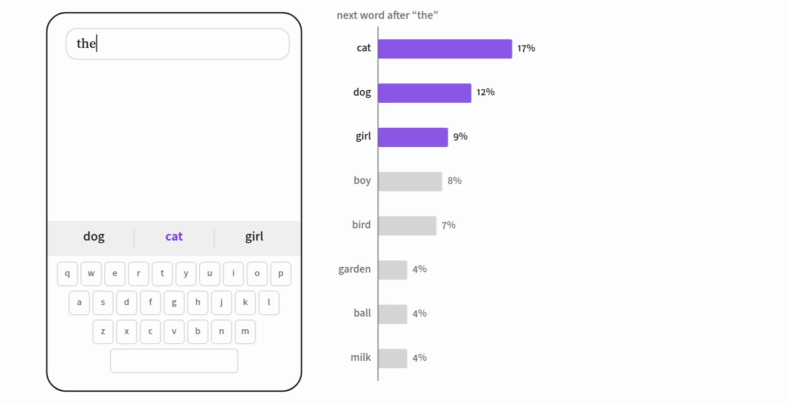
How a Language Model Picks the Next WordFrom counting which word follows which to a small neural network that scores every word in its vocabulary, built and trained right here on a 92-sentence story.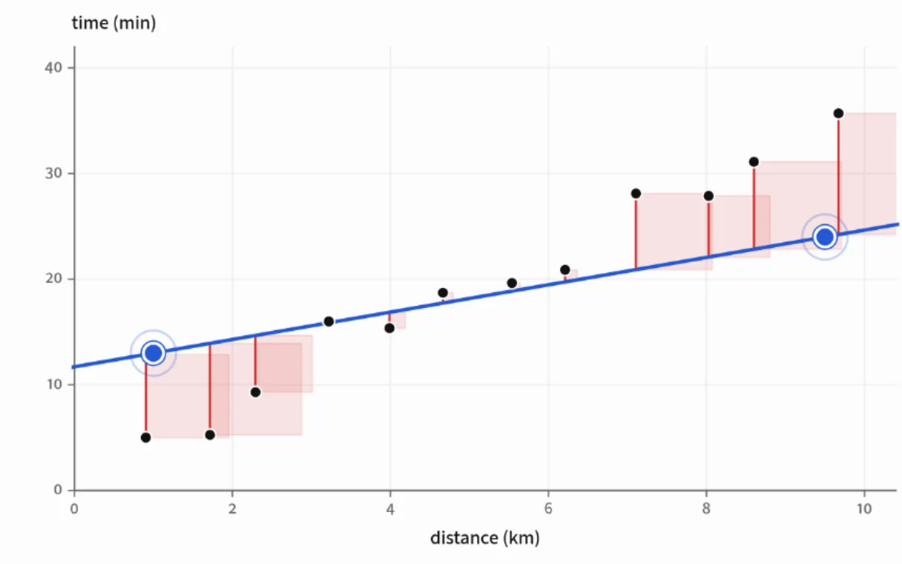
How a Neural Network LearnsA network starts out wrong about everything. Here is how it turns each mistake into a small correction until the answers come out right.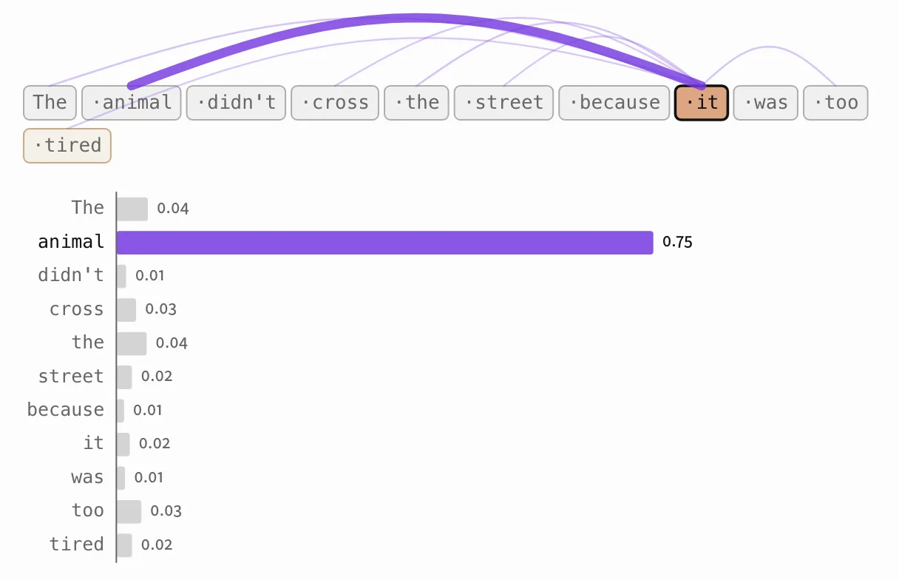
How Attention WorksHow a language model lets each word gather what it needs from the words around it, worked through on tiny models you can take apart.Math
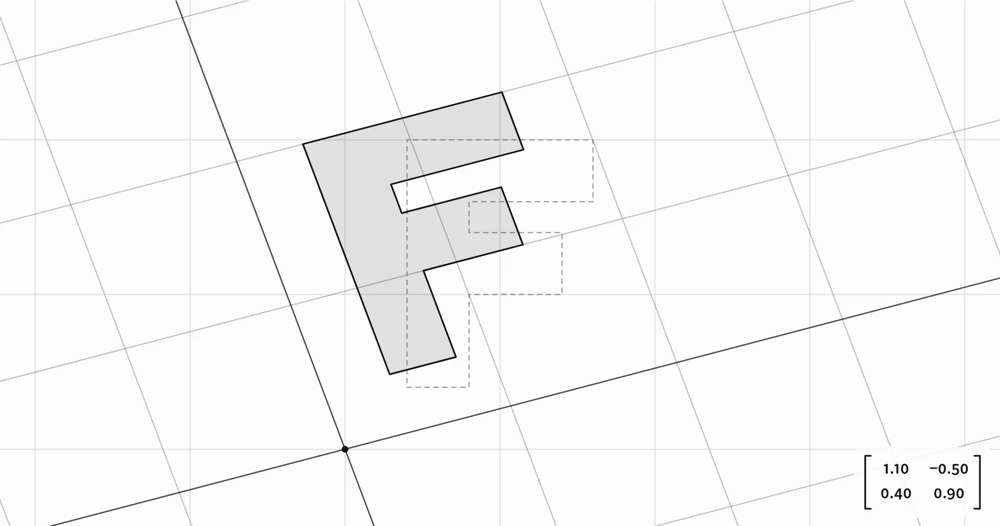
How a Matrix Transforms SpaceHow four numbers can stretch, turn, shear, or flip every point of a plane at once, and what the determinant measures.How Spinning Circles Draw AnythingHow any repeating wave, and even any closed drawing, can be built from circles turning at whole-number speeds, and how to find out which circles a shape needs.What it makes
Every idea gets a figure you can move.
A page has an abstract, numbered sections, and about 25 figures woven into the prose. A sentence says what to try, the figure lets you try it, and the next paragraph names what you saw.
2D figures
Cross-sections, graphs, fields, and step-throughs with sliders, knobs, presets, dragging, and hover readouts.
3D and isometric
Porcelain 3D with section cuts, and machine drawings from hundreds of parts, cut away and exportable as SVG.
Maps and globes
Five projections, 177 countries, cities, great-circle routes, and distances, for anything located on Earth.
Optics
Rays through mirrors, lenses, prisms, raindrops, and the eye, with Fresnel reflection and dispersion.
Sound and images
Tones and plucked strings you hear, spectra, and pixels, filters, aliasing, dithering, and the DCT.
Effects
Fire, rocket plumes, smoke, airflow, ripples, caustics, glow, and sparks, drawn with WebGL.
Diagrams and code
Mermaid diagrams in the page's colors, Shiki-highlighted code, and diffs, pre-rendered.
Research furniture
TeX as MathML, sidenotes, numbered citations, predictions, deep dives, contents, and dark mode.
How it works
Planned like an article, checked like software.
The skill gives your agent a page runtime, a writing and figure guide, and scripts that drive headless Chrome. Every figure gets played with before the page is called done.
- PlanThe question, one shared model, and a figure for every idea, with what the reader moves and notices.
- ScaffoldA page from the template: fonts, theme, runtime, and an empty article.
- Build in passesProse and figure together, a few sections at a time, checked as it goes.
- RenderMermaid diagrams and code turn into static SVG and HTML in the page.
- VerifyDesktop and phone: errors, blank figures, dead controls, sideways scroll, words per figure.
- ExploreEvery slider swept, toggle flipped, preset pressed, and view turned, into contact sheets.
- FixEach fault traced to its layer (model, figure, prose, or runtime) and fixed at the cause.
- ReportThe file, one line per figure, the checks, and what was simplified.
A figure is a small spec.
Controls, state, and a draw function. The runtime handles the canvas, the controls, dragging, keyboard, light and dark, the self-check, and the scripts that play with it.
The same specs run in React, Vue, Svelte, and Astro through the packages in the repo.
demo("swing", {
controls: [{ key: "L", label: "Length", min: 0.2, max: 2, value: 1, unit: "m" }],
state: () => ({ th: 0.5, w: 0 }),
step(dt, s, v) {
s.w -= (9.81 / v.L) * Math.sin(s.th) * dt;
s.th += s.w * dt;
},
draw(g, s, v) {
const P = [g.w / 2 + 160 * v.L * Math.sin(s.th), 30 + 160 * v.L * Math.cos(s.th)];
g.line([g.w / 2, 30], P, { stroke: "muted" });
g.circle(P, 14, { fill: "blue" });
},
});Install
One command, any agent.
Safis follows the Agent Skills format, so any agent that reads skills can use it. Its paths are relative to its own folder.
Any agent
The skills CLI asks which agents to set up. Leave off -g to install for one project.
npx skills add broisnees/safis -g
Claude Code, by hand
Clone the repo and link the skill folder.
git clone https://github.com/broisnees/safis ln -s "$PWD/safis/skills/safis" ~/.claude/skills/safis
Anything else
Copy skills/safis/ into the folder your agent reads skills from.
cp -r safis/skills/safis <skills-folder>/
Needs Node 22 or newer, and Chrome, Chromium, or Edge for the checks. Pages need nothing: they carry their fonts and runtime. 3D and effects need WebGL 2.
Usage
Ask for what you want to understand.
Name the skill, or just ask. The default is an in-depth page; ask for a short piece and you get 8 to 12 figures. Several pages in one folder become a site with a home page and a sidebar.
Questions
Before you try it.
Does a page need a server?
No. Each page is one HTML file with its fonts and runtime inside, and it opens straight from disk. A site can share one runtime file instead, and it still opens from disk.
Which agents does it work in?
Any agent that reads the Agent Skills format: Claude Code, Codex, OpenCode, Cursor, and others. It needs a shell that can run Node and a Chrome-family browser for the checks.
How long does a page take?
An in-depth page is a big build, often many minutes, because every figure gets checked and played with. A short piece is quicker.
Is it accurate?
The skill asks for real, checkable sources and lists its simplifications in its report, but it can still be wrong. Have someone who knows the field review pages about medicine, law, or safety.
Can I use the figures in my own app?
Yes. The runtime ships as packages for React, Vue, Svelte, and Astro, with the same figure specs. See the repo's README.
What does it cost?
The skill is MIT licensed and free. Building pages uses your agent's model, so it costs what your agent costs.
Teach something today.
Install it, then ask your agent how something works.
npx skills add broisnees/safis -g